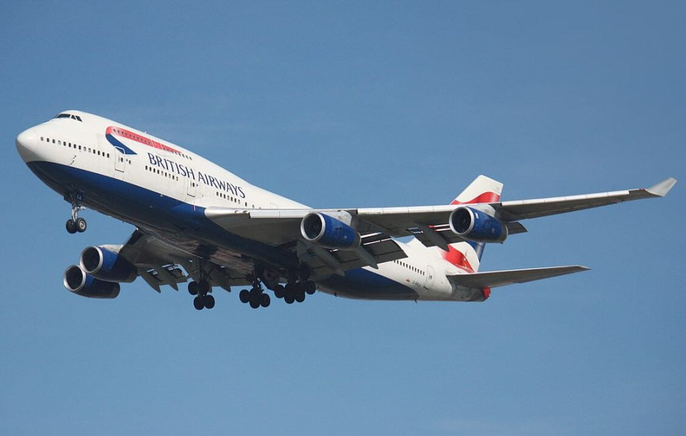
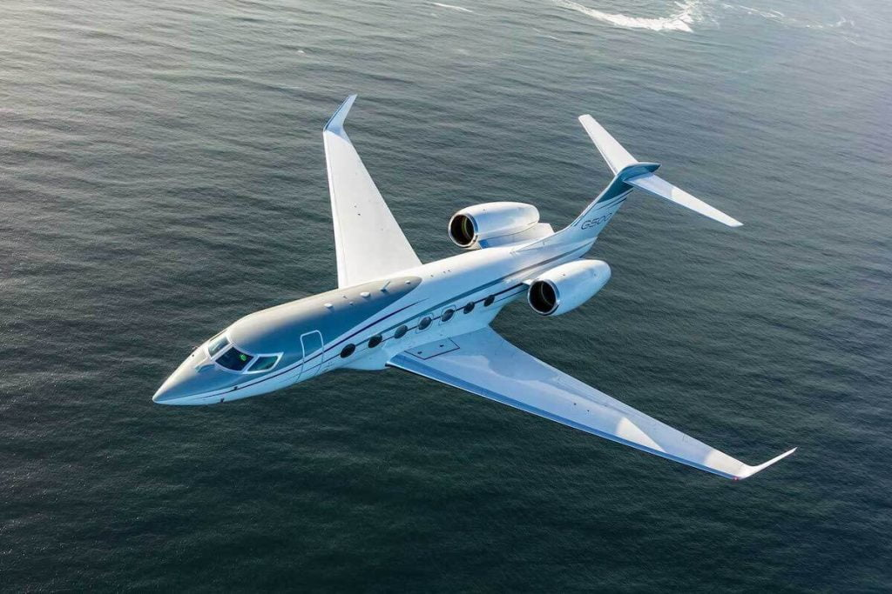
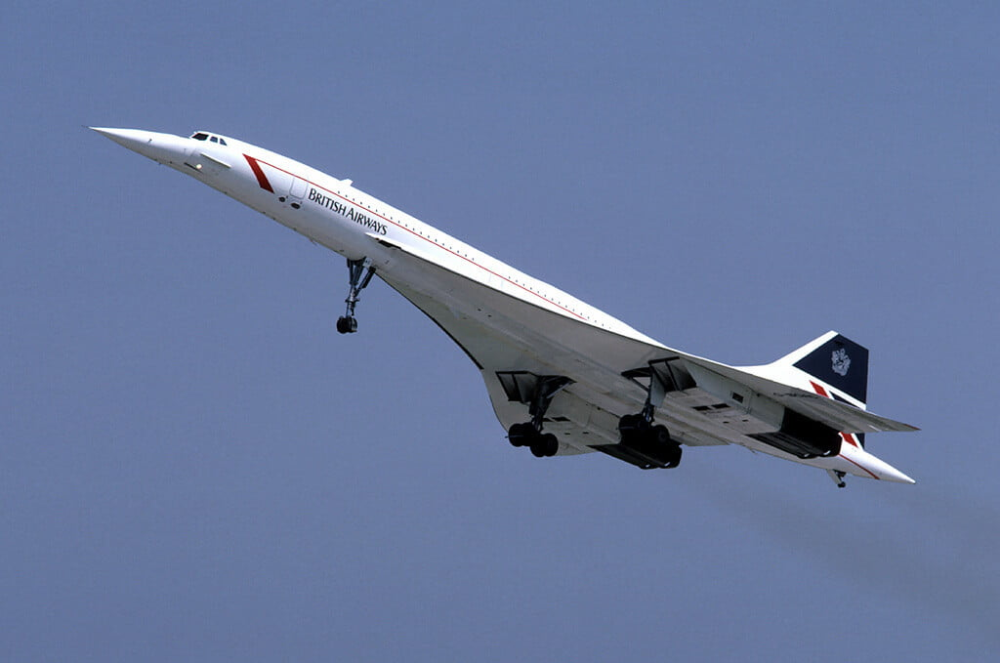
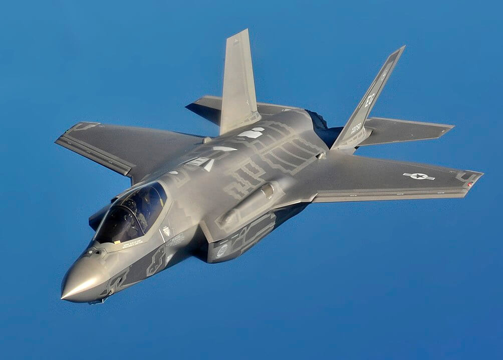
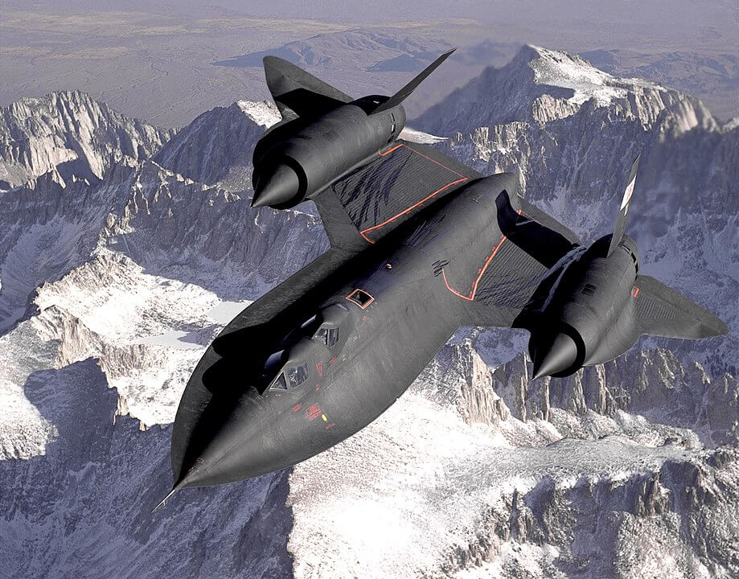

အကယ်လို့ သင့်ကလေးက အဲ့သည် လေယာဉ်ဟာ ဘယ်လောက် အမြင့်ကနေ ပျံနေတာလဲ ဆိုပြီး ကောက်ကာငင်ကာ မေးလိုက်ရင် ဘယ်လို ဖြေရမှန်း မသိပဲ ဆွံ့အ သွားဖူး ပါသလား။ ဒါဆို ဒီဆောင်းပါး အပြီးမှာတော့ ဒီမေးခွန် နောက်တခါ အမေးခံ ရရင် ဖြေစရာ အဖြေ အဆင်သင့် ရှိနေမှာ ဖြစ်ပါတယ်။
ကောင်းကင်မှာ မီးခိုးတန်းတွေ တန်းပြီး ပျံသန်းနေတဲ့ လေယာဉ် တစ်စင်းရဲ့ အမြင့်ဟာ ကမ္ဘာ့ မြေမျက်နှာပြင် အထက် ပေ ထောင်ချီ အမြင့်ကနေ ပျံသန်းနေတယ် ဆိုတာကတော့ ထင်ရှားပါတယ်။ ဒါပေမယ့် ဘယ်လောက် အထိ မြင့်သလဲဗျာ။
ခရီးသည်တင် ဂျက်လေယာဉ်တွေ ပျံသန်းတဲ့ အမြင့်ဟာ တသမတ် ထဲတော့ မဟုတ်ပါဘူး။ ဒီ လေယာဉ်ရဲ့ အမျိုးအစား၊ လူနဲ့ ကုန် အပါဝင် အလေးချိန်၊ ပတ်ဝန်းကျင် လေထုရဲ့ အပူချိန် နဲ့ ရာသီဥတု အခြေအနေ တွေ ပေါ် အများကြီး မူတည်ပါတယ်။
နောက်ပြီး လေယာဉ် ဖြတ်သန်း ပျံသန်းနေတဲ့ သက်ဆိုင်ရာ လေပိုင်နက်က လေကြောင်းထိန်းချုပ်ရေး (air traffic control) ရဲ့ ညွှန်ကြားချက် နဲ့ စည်းမျဉ်း စည်းကမ်း တွေကိုလဲ လိုက်နာ ပျံသန်း ကြရပါတယ်။ ဒါ့အပြင် လေယာဉ်ဟာ ဘယ်အရပ်ကို ဦးတည် နေသလဲ ဆိုတာပေါ်လဲ မူတည်နေ ပါသေးတယ်။
ခရီးသည်တင် ဂျက်လေယာဉ်တွေ မောင်းနှင်ခဲ့ပြီး အခုတော့ Safety Operating Systems ကုမ္ပဏီကို တည်ထောင်ထားသူ အငြိမ်းစာ လေယာဉ်မှူးဟောင်း ဂျွန်ကောက်စ် (John Cox) က “အများအားဖြင့်တော့ ခရီးသည်တင် လေယာဉ်တွေဟာ ပေ ၃၅,၀၀၀ ခန့် ပတ်ဝန်းကျင် ကနေ ပျံသန်း ကြလေ့ ရှိပါတယ်” လို့ ရှင်းပြပါတယ်။
“တခါတလေလဲ ပေ ၄ သောင်း (သို့) ၄၁,၀၀၀ လောက်ထိ တက်ပြီး ပျံတာမျိုးလဲ ရှိတတ်ပါတယ်။ ဒါပေမယ့် ဒီအမြင့်က ပျံတာမျိုးက အတော်လေး ရှားပါတယ်” လို့ သူက ဆက်ရှင်း ပြပါတယ်။
အငြိမ်းစား လေကြောင်း ထိန်းချုပ်ရေး အရာရှိ (retired air traffic controller) ဖြစ်သူ တွမ်အက်ဒေါဂ် (Tom Adcock) ကလဲ ခရီးသည်တင် လေယာဉ် အများစုဟာ အမြင့်ပေ ၃၅,၀၀၀ နဲ့ ၄၀,၀၀၀ ကြားမှာ အဓိက ပျံသန်းကြတယ်လို့ ဆိုပါတယ်။ အချို့ လေယာဉ် တွေကတော့ အမြင့်ပေ ၄၁,၀၀၀ ကနေ ၄၃,၀၀၀ အမြင့်ထိအောင် ပျံသန်း ကြတာမျိုးလဲ ရံဖန်ရံခါ ရှိတတ်ပါတယ်။ ဥပမာ ဘိုးအင်း ၇၅၇ လေယာဉ်တွေဟာ အမြင့်ပေ ၄၂,၀၀၀ အထိ ပျံသန်း နိုင်ကြပြီး ဘိုးအင်း ၇၆၇ တွေကတော့ အမြင့်ပေ ၄၃,၀၀၀ ခန့်အထိ ပျံသန်း နိုင်ကြပါတယ်။ ဘိုးအင်း ၇၄၇-၄၀၀ တွေဆို ဒီ့ထက်တောင် ပိုပြီး မြင့်မြင့် ပျံနိုင် ကြပါတယ်လို့လဲ သူက ဆက်ရှင်း ပြပါတယ်။

လေကြောင်းထိန်း မျှော်စင်တွေဟာ လေယာဉ်တွေ ပျံသန်းရမယ့် အမြင့်ပေကို ညွှန်ကြားရာမှာ ဒီ လေယာဉ်ဟာ ဘယ်အရပ်ကို ဦးတည် ပျံသန်း နေသလဲ ဆိုတဲ့ အချက်ကိုလဲ ထည့်သွင်း စဉ်းစား ကြပါတယ်။
၃၈,၀၀၀ ရော ၃၉,၀၀၀ ရောဟာ စုံဂဏန်းတွေ ဖြစ်ကြပါတယ်။ ဒါပေမယ့် ဒီ ဂဏန်းရဲ့ ရှေ့ဆုံး နှစ်လုံး ဖြစ်တဲ့ ၃၈ နဲ့ ၃၉ တို့ဟာတော့ တစ်ခုက စုံဖြစ်ပြီး နောက်တခုက မ ဂဏန်း ဖြစ်နေပါတယ်။ အနောက်ကို ဦးတည်တဲ့ လေယာဉ် တွေဆိုရင် စုံဂဏန်း ထိပ်စည်း နှစ်လုံး ကျတဲ့ ၃၈,၀၀၀ လို အမြင့်ပေ မျိုးကို (ဒါမှမဟုတ် ၃၆,၀၀၀ ပေဖြစ်ဖြစ်၊ ပေ ၄၀,၀၀၀ ဖြစ်ဖြစ်ပေါ့) ပျံသန်းရန် အမြင့်အဖြစ် သတ်မှတ်ပေး ကြပါတယ်။ မဂဏန်း ထိပ်စည်း နှစ်လုံး ကျတဲ့ ၃၉,၀၀၀ လို အမြင့်ပေ ကိုတော့ (ဒါမှမဟုတ် ၃၇,၀၀၀ ဖြစ်ဖြစ်၊ ၄၁,၀၀၀ ပေ ဖြစ်ဖြစ်ပေါ့) အရှေ့ဖက်ကို ဦးတည်နေတဲ့ လေယာဉ်တွေကို ပျံသန်းဖို့ သတ်မှတ် ပေးကြပါတယ်။
ဒီလို စုံထိပ်စည်း၊ မထိပ်စည်း နဲ့ သတ်မှတ် ပေးလိုက်တဲ့ အတွက် ဆန့်ကျင်ဖက် အရပ်ကို ဦးတည် ပျံသန်း နေတဲ့ လေယာဉ်တွေ တစ်စင်းနဲ့ တစ်စင်း အကြားမှာ အမြင့်ပေ ကွာခြားချက် ပေ ၁,၀၀၀ အနည်းဆုံး ရှိနေမှာ ဖြစ်ပါတယ်။ ဒီ အကွာအဝေးဟာ လေယဉ်ချင်း မျက်နှာချင်းဆိုင် ဖြတ်သွားရင်တောင် လွတ်လွတ်ကင်းကင်း ရှိတဲ့ အမြင့်ပေ ကွာခြားချက် ဖြစ်ပါတယ်။
အရှေ့မြောက် (သို့) အရှေ့တောင်ဖက် အရပ်ကို ဦးတည်နေတဲ့ လေယာဉ်တွေ ကိုလဲ အရှေ့အရပ်ကို ဦးတည်တဲ့ လေယာဉ်တွေ လိုပဲ မ ထိပ်စည်း အမြင့်ပေပဲ သတ်မှတ်ပေးပါတယ်။အနောက်မြောက် (သို့) အနောက်တောင် အရပ်ကို ဦးတည်နေတဲ့ လေယာဉ်တွေဟာလဲအနောက်အရပ်ကို ဦးတည်တဲ့ လေယာဉ်တွေ လိုပဲ စုံထိပ်စည်း အမြင့်ပေ ရရှိကြပါတယ်။
ဒီလို စုံ-မ စနစ်ဟာ ပြောရရင်တော့ အမေရိကန် ပြည်ထောင်စုက အဝေးပြေး လမ်းမကြီးတွေကို အမည်ပေးတဲ့ စနစ်ကနေ အခြေခံပြီး ပေါက်ဖွားလာ ခဲ့တာလို့ အချို့က ပြောကြပါတယ်။ အမေရိကန် ပြည်ထောင်စုက အဝေးပြေး လမ်းမကြီး တွေကို အမည်ပေးတဲ့ အခါမှာ အရှေ့-အနောက် ပြေးနေတဲ့ လမ်းမကြီး တွေကို စုံ ဂဏန်းတွေ သတ်မှတ်ပြီး တောင်မြောက် ပြေးတဲ့ လမ်းမကြီးတွေ ကိုတော့ မဂဏန်း သတ်မှတ် မှည့်ခေါ် ခဲ့ပါတယ်။
ဒီလို လေယာဉ်တစ်စင်းကို ပျံသန်းဖို့ အမြင့်ပေ သတ်မှတ်ပေးရာမှာ အခြား အချက်တွေက ဘာတွေ ရှိဦးမလဲ။ ဒါနဲ့ ပါတ်သက်လို့ လေယာဉ်မှူးဟောင်း တစ်ဦးဖြစ်သူ ကောက်စ် က “မြင့်လေ ကောင်းလေပဲ” လို့ ရှင်းပြပါတယ်။
ဂျက်အင်ဂျင် တွေရဲ့ သဘာဝက အမြင့်ပိုင်း တွေမှာ ပိုပြီး အလုပ်လုပ်နိုင် စွမ်းကြတယ်လို့ သူက ရှင်းပြပါတယ်။ နောက်ပြီး မြင့်လေလေ လေထု ခုခံအား လျော့နည်းလေလေမို့ ဆီစားလဲ ပိုပြီး သက်သာပါတယ်။
လေယာဉ်မှူး တွေဟာ လေထဲ ပျံသန်းတဲ့ အခါမှာ လေယာဉ်ဆီ သုံးစွဲမှု ပိုနည်းတာကို ပိုကြိုက် ကြပါတယ်။ ဘာလို့လဲ ဆိုတော့ ဒီလို ဆီစား နည်းတဲ့အတွက် ခရီးဆုံး ရောက်ချိန်မှာ လေယာဉ်ပေါ်မှာ ဆီများများ ပိုကျန်လို့ပါ။ ဒီတော့မှ ချက်ချင်း ကွင်းမဆင်း နိုင်ပဲ အခက်အခဲ တခုခု ရှိခဲ့လျှင် (ဥပမာ မိုးသည်းထန်ပြီး လေပြင်းတိုက်နေတာမျိုး) ကွင်းပေါ်မှာ လှည့်ပတ် ပျံသန်းနိုင်ဖို့ အရန်ဆီ များများ ကျန်မှာ ဖြစ်ပါတယ်။
ဒီလို မြင့်လေ ကောင်းလေ ဆိုတဲ့ အချက်ဟာ ခရီးရှည် တွေတင် မကပါဘူး၊ ခရီးတို တွေမှာလဲ အကျိုးရှိပါတယ်။ “ခင်ဗျားတို့ ယုံမှာ မဟုတ်ဘူး။ ခရီးတို လေးတွေမှာ တောင်မှ ဆီစား အသက်သာဆုံး နည်းက လေယာဉ်ကို အမြင့်ကို ဆွဲတင်လိုက်ပြီး အင်ဂျင် ပါဝါကို လျှော့ချပြီး ရည်မှန်းချက် လေယာဉ်ကွင်းကို ဆင်သက်တဲ့ နည်းလမ်း ဖြစ်ပါတယ်” လို့ သူက ဆက်ပြီး ရှင်းပြပါတယ်။
“ကျွန်တော်သာဆို အမြင့်ပေ ၃၁,၀၀၀ လောက်ထိကို ဆွဲတင်သွားမှာပဲ။ အဲ့သည် အမြင့်မှာ ၅ မိနစ်တောင် နေရမှာ မဟုတ်ပါဘူး။ ချက်ချင်း ပြန်ပြီး ဆင်းလာရမှာပါ” လို့လဲ သူက ရှင်းပြပါတယ်။
ဒီလို အသင့်တော်ဆုံး အမြင့်ပေကို ယခုခေတ် မှာတော့ လေယာဉ်ရဲ့ ကွန်ပြူတာက တွက်ချက်ပြီး လေယာဉ်မှူးကို အကြောင်းကြား ပေးမှာ ဖြစ်ပါတယ်။ ဒါ့အပြင့် လေယာဉ် အမြင့်ဆုံး ပျံသန်းနိုင်မယ့် အမြင့်ပေ ကိုလဲ လေယာဉ်ရဲ့ အလေးချိန် နဲ့ လေထု အပူချိန် တွေပေါ် အခြေခံ တွက်ချက်ပြီး အကြောင်းကြား ပေးမှာ ဖြစ်ပါတယ်။ ဒီ့နောက် လေယာဉ်ဆီ အချို့ကို သုံးစွဲလိုက် ပြီးလို့ လေယာဉ် အလေးချိန် ပေါ့ပါးသွားတဲ့ အခါ ဒီ့ထက် ပိုမြင့်တဲ့ အမြင့်ကို တက်လှမ်းနိုင် ကြမှာ ဖြစ်ပါတယ်။
“လေယာဉ်မှူး တွေဟာ အသင့်တော်ဆုံး အမြင့် (သို့) အမြင့်ဆုံး ပျံနိုင်တဲ့ အမြင့် နှစ်ခုထဲက တစ်ခုခုနဲ့ နီးနိုင်သမျှ နီးကပ်အောင် ကြိုးစား ပျံသန်းကြမှာ ဖြစ်ပါတယ်” လို့ ကောက်စ် က ရှင်းပြပါတယ်။ ဒီအချက်က အနောက်ဖက် အရပ်ကို ပျံတဲ့ အခါ ပိုပြီး သိသာပါတယ်။ အနောက်ဖက်ကို ပျံနေတဲ့ လေယာဉ်တစ်စင်းဟာ လေတိုက်ရာ အရပ်ကို ဆန့်ကျင်ပြီး ပျံသန်းရတာမို့ ညင်သာတဲ့ ပျံသန်းမှု ရဖို့အတွက် ပိုမြင့်တဲ့ အမြင့်ကနေ ပျံသန်း ကြရတာ ဖြစ်ပါတယ်။
ကောင်းကင်ပြင်မှာ ပျံသန်းနေတာ ခရီးသည်တင် ဂျက် လေယာဉ်တွေချည်းပဲ မဟုတ်ပါဘူး။ ကိုယ်ပိုင် လေယာဉ်ငယ် လေးတွေလဲ ကောင်းကင်မှာ ပျံသန်း ကြပါတယ်။ ပန်ကာတပ် ကိုယ်ပိုင် လေယာဉ်ငယ် လေးတွေဟာ ယေဘုယျ အားဖြင့် အမြင့်ပေ ၁၀,၀၀၀ အောက်ပဲ ပျံသန်းနိုင် ကြပါတယ်။ အများအားဖြင့်တော့ ပေ ၅,၀၀၀-၆,၀၀၀ လောက် ဝန်းကျင်က ပျံသန်း ကြတာ များပါတယ်။
ပန်ကာတပ် ခရီးသည်တင် လေယာဉ် ကြီးတွေကတော့ ကိုယ်ပိုင် လေယာဉ်ငယ် လေးတွေထက် မြင့်တဲ့ အမြင့်ကနေ ပျံသန်း ကြပါတယ်။ ဒါပေမယ့် သူတို့ အမြင့်ဆုံး ပျံနိုင်တဲ့ အမြင့်ဟာ ဂျက်လေယာဉ် တွေကိုတော့ မမှီပါဘူး။ ဥပမာ Bombardier Q400 လို ပန်ကာတပ် ခရီးသည်တင် လေယာဉ်တွေဟာ အမြင့်ပေ ၂၅,၀၀၀ အထိ အမြင့်ဆုံး ပျံသန်းနိုင် ကြပါတယ်။
အမြင့်ဆုံးမှာ ပျံသန်း နေကြတဲ့ လေယာဉ်တွေ ကတော့ သန်းကြွယ် သူဌေးတွေ ပိုင်ဆိုင်တဲ့ ကိုယ်ပိုင် ဂျက်လေယာဉ်ငယ် တွေပဲ ဖြစ်ကြပါတယ်။ ဥပမာ Learjet တို့ Gulfstreams တို့လို ကိုယ်ပိုင် ဇိမ်ခံ ဂျက်လေယာဉ် တွေဟာ အမြင့်ပေ ၄၅,၀၀၀ အထိ (အချို့ မော်ဒယ်တွေဆို အမြင့်ပေ ၅၁,၀၀၀ အထိ) ပျံနိုင် ကြပါတယ်။



